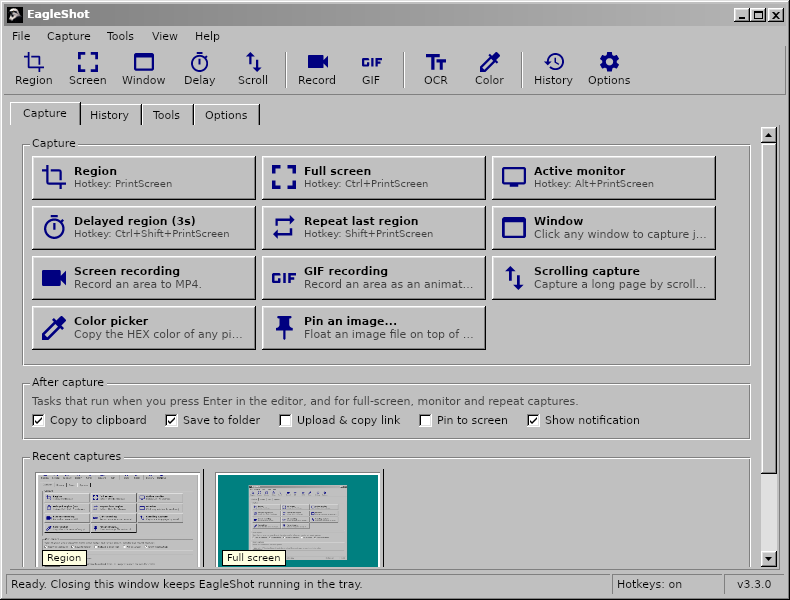

EagleShot
Screenshots, screen recording and capture tools. Free and open source. Ekran görüntüsü, ekran kaydı ve yakalama araçları. Ücretsiz ve açık kaynak.
Press PrintScreen, select an area, annotate it and copy, save, pin or upload it. Record the screen to MP4 or GIF, grab long scrolling pages, read text with OCR and scan QR codes. It is like ShareX and Lightshot, in a familiar retro interface, on Windows, macOS and Linux.
PrintScreen'e bas, alanı seç, üzerine işaretle; kopyala, kaydet, ekrana sabitle ya da yükle. Ekranı MP4 veya GIF olarak kaydet, uzun sayfaları kaydırarak yakala, OCR ile metin oku, QR kod tara. ShareX ve Lightshot gibi; Windows, macOS ve Linux'ta, tanıdık retro bir arayüzle.



EagleShot SetupEagleShot Kurulumu
Welcome to the EagleShot Setup WizardEagleShot Kurulum Sihirbazına Hoş Geldiniz
Choose your system below. Downloads come straight from GitHub Releases.
Aşağıdan sisteminizi seçin. Dosyalar doğrudan GitHub Releases'tan iner.
Installing on WindowsWindows'a kurulum
- Run
EagleShot_Setup_…_win-x64.exeand follow the steps. - Keep "Use the PrintScreen key for EagleShot" checked so PrintScreen opens EagleShot instead of the Snipping Tool.
- If Windows SmartScreen warns you, click More info → Run anyway (the app isn't code-signed).
EagleShot_Setup_…_win-x64.exedosyasını çalıştırın ve adımları izleyin.- PrintScreen'in Ekran Alıntısı Aracı yerine EagleShot'ı açması için "PrintScreen tuşunu EagleShot için kullan" seçeneğini açık bırakın.
- SmartScreen uyarı verirse Ek bilgi → Yine de çalıştır'a tıklayın (uygulama imzalı değil).
Installing on macOSmacOS'a kurulum
- Open the
.dmgand drag EagleShot to Applications. - First launch: right-click EagleShot → Open. On macOS 15 and later use System Settings → Privacy & Security → Open Anyway.
- Allow Screen Recording and Accessibility (for hotkeys).
- If macOS says the app is "damaged":
xattr -cr /Applications/EagleShot.app
.dmgdosyasını açın, EagleShot'ı Uygulamalar klasörüne sürükleyin.- İlk açılışta EagleShot'a sağ tıklayıp Aç'ı seçin. macOS 15 ve sonrasında Sistem Ayarları → Gizlilik ve Güvenlik → Yine de Aç.
- Ekran Kaydı ve Erişilebilirlik (kısayollar için) izinlerini verin.
- macOS uygulamanın "hasarlı" olduğunu söylerse:
xattr -cr /Applications/EagleShot.app
Installing on LinuxLinux'a kurulum
- Extract the archive:
tar xzf EagleShot_…_linux-x64.tar.gz - Run
./installers/linux/install.shinside the extracted folder. - Optional:
xcliporwl-clipboardfor the clipboard,ffmpegfor recording,tesseract-ocrfor OCR.
- Arşivi açın:
tar xzf EagleShot_…_linux-x64.tar.gz - Açılan klasörde
./installers/linux/install.shkomutunu çalıştırın. - İsteğe bağlı: pano için
xclipveyawl-clipboard, kayıt içinffmpeg, OCR içintesseract-ocr.
| KeysTuşlar | Actionİşlem |
|---|---|
PrintScreen (F12 on macOS)(macOS'ta F12) | Capture regionAlan yakala |
Ctrl+PrintScreen | Capture full screenTam ekran yakala |
Alt+PrintScreen | Capture active monitorEtkin monitörü yakala |
Shift+PrintScreen | Repeat last regionSon alanı tekrarla |
Ctrl+Shift+PrintScreen | Delayed region captureGecikmeli alan yakalama |
Ctrl+Shift+K | Color pickerRenk seçici |
Enter / Ctrl+C / Ctrl+S | In the editor: done, copy, saveEditörde: bitti, kopyala, kaydet |
About EagleShotEagleShot Hakkında
EagleShot
VersionSürüm 3.2.0
EagleShot is a free, open-source screenshot and screen recording tool for Windows, macOS and Linux. It pairs the speed of Lightshot with a ShareX-style workflow: capture modes, an annotation editor, after-capture tasks, uploads, history and pinned screenshots, in a classic Windows 9x/2000-style interface.
EagleShot; Windows, macOS ve Linux için ücretsiz ve açık kaynaklı bir ekran görüntüsü ve ekran kaydı aracıdır. Lightshot'ın hızını ShareX tarzı bir iş akışıyla birleştirir: yakalama modları, düzenleme editörü, yakalama sonrası görevler, yükleme, geçmiş ve ekrana sabitleme; klasik Windows 9x/2000 tarzı bir arayüzde.
Built with .NET 9 and Avalonia UI. Released under the MIT License.
.NET 9 ve Avalonia UI ile geliştirildi. MIT Lisansı ile yayınlanır.